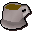

Palace
Location at 3213, 3483 · Kingdom Of Misthalin
Open on the world map → Open in knowledge graph → Below: Palace (underground)
NPCs
| NPC | Level | Spawns | Notable drops |
|---|---|---|---|
| 33 | 2 | Coins, Steel bar, Iron sword, Mithril arrow | |
| 24 | 2 | ||
| 21 | 1 | ||
| 21 | 14 | Coins, Steel arrow, Iron dagger, Body talisman | |
| 19 | 2 | ||
| 17 | 1 | ||
| 14 | 1 | ||
| 6 | 3 | ||
| 2 | 3 | Bolt, Wizards hat, Hammer, Ball of wool | |
| 2 | 1 | Coins, Herb drop table, Bolt, Fishing bait | |
| 2 | 1 | Coins, Herb drop table, Bolt, Fishing bait | |
| 2 | 1 | Coins, Herb drop table, Bolt, Fishing bait | |
| 2 | 1 | ||
| 1 | 3 | ||
| shop | 1 | ||
| 2 | |||
| 3 | |||
| 1 | |||
| 1 | |||
| 1 | |||
| 1 | |||
| 1 | |||
| 1 | |||
| 1 | |||
| shop | 1 |
Ground items

Cup of tea x1